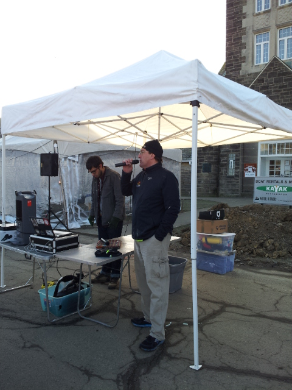
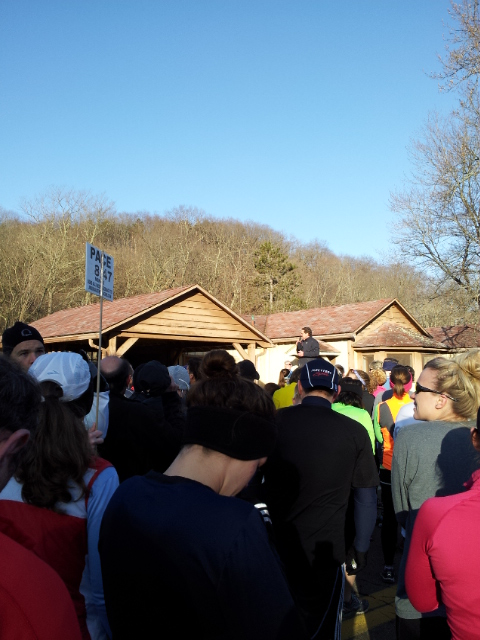
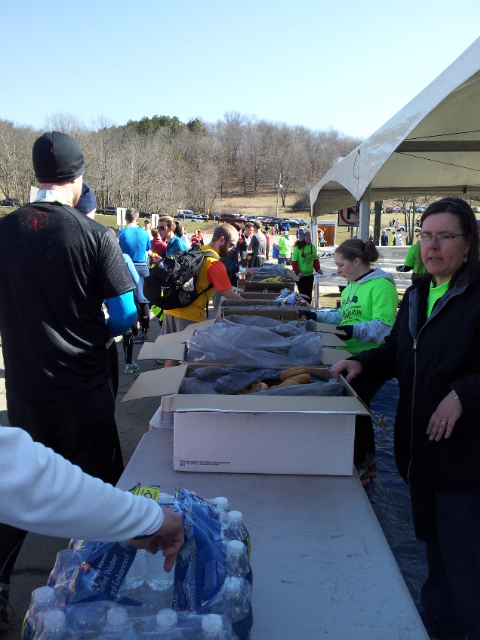
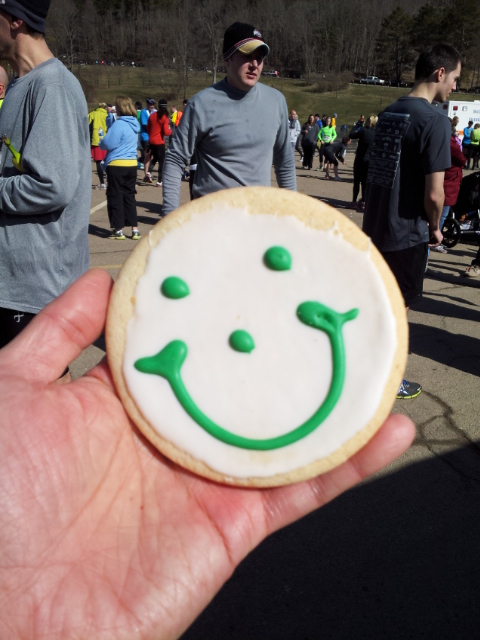
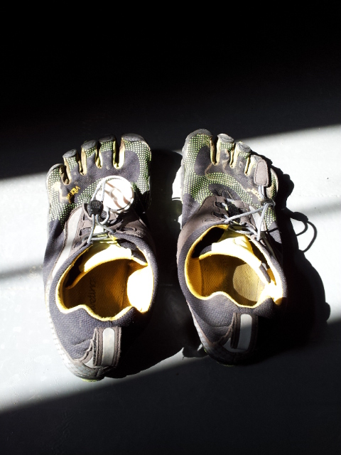
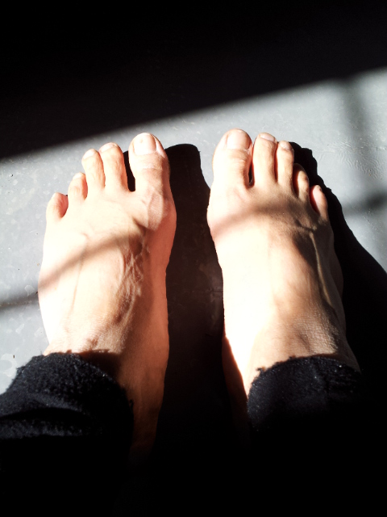
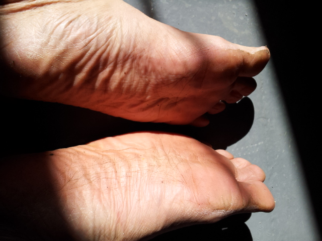

Report on Just A Short Run: my first half marathon in nine years!
(Updated 2013-05-09 with official race videos!)
Until today, I had not run a half marathon in nine years. This distance had given me a lot of trouble the five times I did it in 2001-2004. So I was very anxious about running Just A Short Run this morning.
Here’s why I feared it, and how I ended up unexpectedly pleased with the experience, including finishing over four minutes faster than my goal time.
Until today I have done the Just A Short Run four times:
5K in 2001
half marathon in 2002
30K in 2003 (my only DNF in my life, because I went into it sick)
5K in 2004
Past half marathons
I have only once ever partly successfully executed a half marathon race, and even then, some things went rather wrong. Here’s a summary of what went wrong in each of my half marathons up till today:
Ikea Montour Trail half marathon, 2001
This was my very first half marathon, after having run some good 5K races earlier in the year.
I went out too fast (because of an initial downhill that got me too excited), and paid the price. I finished in 1:47:23. My splits for the 13.1 miles:
6:31.94
7:59.53
8:09.44
8:16.53
8:16.99
8:19.28
8:19.64
7:44.85
8:01.41
8:23.29
8:28.72
8:42.36
9:17.34
0:49.85
I was just struggling in the last miles, and very demoralized. I almost collapsed on my buddy Jude’s shoulder after I finished. Also, I had major blisters during the race.
Just A Short Run half marathon, 2002
I did this race without any real training at all, just because it was there.
I got blisters in the race, and also had to deal with weird existential thoughts like “Why am I running this?”
I finished in 1:49:34, but actually, the course was found to be long by about a tenth of a mile, so that number does not mean much.
Ikea Montour Trail half marathon, 2002
I got my revenge in this race, actually training hard specifically for the distance, doing long intervals and a lot of tempo and race-pace runs. Overall I did very well, finishing in 1:38:48, but the experience was marred by some serious problems.
I ran mile 4 too fast, but since I was carefully monitoring on my watch, I slowed down for mile 5. Still, one pays the price eventually for going too fast.
Also, I still was not fueling consistently. I erred by taking both water and energy drink, resulting in dilution.
In mile 12, my calves started cramping up and I had to stop at one point. I lost about half a minute because of this. In mile 13, I had to run conservatively to avoid cramps. It was very frustrating.
Finally, after I finished, while getting on the shuttle bus, I cramped up quite severely.
Ikea Montour Trail half marathon, 2003
A total disaster. I finished in 1:45:32, which is 7:44 slower than the previous year. This was while having a 5K fitness similar to the previous year’s. Something just went wrong. I felt sluggish throughout, and I cramped up in mile 10. And I had digestive problems.
Chamber Classic half marathon, 2004
1:46:12. No real training for it, just did it because it was there and I had not been able to do the Montour Trail one. A fiasco, in which I struggled with my usual problems (slowing down in the final miles, cramping).
Preparation
I did not go into this race truly prepared to race the half marathon. I know what it takes to race a half marathon for time: long tempo and race-pace runs, long intervals. I have done little of that so far this year.
Rather, what I am really training for is the Pittsburgh Marathon, but I felt that I should do a half marathon race in order to get a taste of what it is like to run in a long race. I have been doing long runs every week for a while now, so running the half marathon distance is not a problem: the challenge for me was to figure out if I could partially race it, to find my limits.
And I wanted to fix the problems I had in my previous half marathons:
blistering
going out too fast
slowing way down
cramping
digestive problems
Blistering
Solving the problem of blistering has been trivial for me since I switched to wearing Vibram FiveFingers shoes. I just don’t get serious blisters any more; my feet have adapted completely.
By the way, I just got my Luna Sandals two days ago, but have not run in them yet. Friends helpfully convinced me that it would be crazy to wear them in the race without any actual test of them (I knew that, but just needed validation).
By not treating this as an all-out race whose goal is to minimize time, I could afford to run more conservatively and plan on negative-splitting. I decide to target a time of 1:55:00 (reasonable given my recent 5K time of 25:11), with the idea of speeding up if it felt right.
Slowing way down
I consciously carb-loaded for this half marathon and had a race fueling plan.
Cramping
I have no idea how to really solve this problem. I think I must be genetically predisposed to cramping. People like to claim electrolyte deficiency is the cause, but I don’t believe this at all, because I have tried loading up on electrolytes.
Digestive problems
I have concluded that it is safest to avoid Gatorade and the like on the course because people mix it in funny proportions. Sticking with predictable gels and water is my new plan. One gel before starting the race, and then one gel every 45 minutes after that (which in the case of a half marathon means two gels on the course).
Also, I used to drink too much water, resulting in sloshing in the stomach. So I drink less now during a race, and drink more well before it starts.
Note the big hill at the beginning. Control of effort going up and down hills is critical, to avoid bad spikes in energy usage.
## The race
Here are the [official race results](http://www.runhigh.com/2013RESULTS/R033013AA.html).
### Start

Announcements
I started out with the 1:55:00 finish pacer (8:47 pace):

My initial pacer
Going up the big hill, however, he totally lost me, as I slowed down to avoid prematurely feeling the burn. In fact, a slower pacer even passed me. No problem.
On the downhill, I quickly started regaining ground. I think after around three miles, I had caught up to the original 8:47 pacer, and then that was feeling too slow for me, so I passed him for good, and never saw a pacer again in the race.
### Gatorade error
I made an error at one of the aid stations when I mistaken grabbed Gatorade and threw it in my face. I got stickiness all over my face and the front of my jacket and fingers. It was really disgusting, actually. I will be more careful in the future to ask what stuff is before taking a cup.
Otherwise, I stuck well to my plan of taking water and two gels during the entire half marathon. Note that the race provided [e-Gel](http://www.cranksports.com/products/eGel/), which I had not had before. If I were seriously racing this half marathon, obviously I would have bought and tried this stuff on long runs ahead of time.
### Passing people
The thing about Just A Short Run is that people are running different races and therefore are at different paces, and also in such a huge race, there are always those who are inexperienced and go out too fast and slow down. What this means, in practice, is that if you are running evenly (or for a negative split, like I was doing), you will be needing to pass people constantly. It is very important to be a good judge of your own pace, because otherwise you might think you are doing OK, while the reality is you're following someone who is slowing down.
I like to target someone who looks faster than me and then try to keep up with him or her. I did this repeatedly in the race.
At one point I asked a guy what his pace was, and he said 8:30. I was feeling good, so eventually I passed him. I realized at that moment that I was going to be able to run considerably faster than 1:55:00, despite my very slow start.
### Last five miles
I maintained speed in the last 5 miles of the race; I might even have gone faster, but without the data, I cannot tell, since when fatigue sets in, effort does not equal actual pace. I was definitely getting tired, but I kept pushing, trying to pretend I was running a 10K race or something. I thought that I just might have a shot at finishing under 1:50:00. I didn't, but that's OK. I finished in 1:50:52.
The official [split data](http://www.runhigh.com/2013RESULTS/R033013AF.html) shows that I did the last 5 miles in 42:03, which is about 8:25 pace. Since I averaged 8:28 pace for the whole race, I clearly ran faster in the last 5 miles than in the first 8.1 miles.
If I had known what I was capable of, I could have run faster and more evenly from the start, and finished faster, but that was quite explicitly *not* the goal today. The goal was to finish strong, which I did.
## SPIbelt
This was my first time running a race wearing a SPIbelt. It did not cause me any trouble at all; I barely noticed it. I will wear it during the Pittsburgh Marathon, in order to have my phone on me in case of emergency. I did not use my phone during the race, only before and after it, but it's always nice to know that I can directly contact Abby if something goes wrong.
## Cramping
I did a little bit of a final sprint across the finish line. The moment I crossed was the moment when I felt both of my calves start to twitch. I realized that I almost crossed the line to full-on cramping, and decided to keep moving. I grabbed a banana and ate it while jogging slowly, and planning to jog off the heaviness in my calves.
Then disaster struck: I stubbed my right toes on the ground and instantly two of my toes cramped up and my lower right calf also cramped up. I ripped off my shoe and luckily, after about twenty seconds, I was OK again. I decided it was unsafe to keep moving, and I went upstairs in the North Park Boat House to just keep warm and stretch in a safe environment. I did not cramp up again.
So I have not entirely solved the cramping problem. Apparently sprinting was enough to push me over the edge. Also, closed-toe shoes are a problem because my toes inevitably get at least somewhat jammed in the course of running in closed-toe shoes. This is why I want to test out the Luna Sandals, which may completely prevent toe jamming and cramping. As for my calves, I don't know, maybe I just need to do more hard longer runs in order to get them accustomed to the lactic acid buildup or something.
## Post-race eating
My stomach was entirely OK during the race. No water sloshing, no indigestion, no gnawing hunger. I was hungry after finishing, of course.

Post-race food
I made some mistakes after finishing, however. I ate not only a banana, but also a bagel, a Smiley Cookie, a little bag of chips, and a little bag of cookies. I believe I should have excluded the bag of cookies and the chips, and saved the Smiley Cookie for later. I had some digestive discomfort (nothing serious though) for a while after everything I ate. I will remember next time. After a 5K or 10K, I can eat anything, but apparently, after a half marathon, digestion is trickier.
But it is hard not to gobble up a Smiley Cookie:

Smiley Cookie
At home, I ended up deciding to eat familiar leftovers rather than going out to a buffet as I had originally thought of doing with Abby.
## Feet
My feet were sore, but actually, less sore than after each of my long runs in the past month. I think I've become more efficient. No knee pain either. After the race, just general inflammation. I think I'll be OK tomorrow.

Vibram FiveFingers Bikila LS

Franklin's feet

Franklin's soles of feet
I did get one small blister, on my right pinkie toe, but I didn't actually notice it until I was home and took a shower.
## What does all this mean for the marathon?
This [race time predictor](http://www.runnersworld.co.uk/general/rws-race-time-predictor/1681.html) suggests that given that I ran a half marathon in 1:50:52, I can do a full marathon in 3:51:08. I am, frankly, skeptical that I can go under 4:00:00 at all a month from now. I know I want to be conservative in the marathon, and I rather doubt I will be able to negative-split it, and I still have concerns about late-stage cramping or other physical deterioration. We shall see how my training progresses. I am going to start adding "quality" work in the form of interval training in order to toughen up.
## Thanks
Many thanks to my wife Abby, who dropped me off at the race and picked me up after visiting her parents in the vicinity, saving me driving and parking hassles! And thanks to all my friends who have been supportive while I've been so nervous for weeks about this race!
I like to thank [Elite Runners and Walkers](http://eliterunners.com/) for putting on a really well-organized race. The instructions were very clear, volunteers giving out water, Gatorade, and gels were everywhere, there was plenty of post-race food, bag check was convenient, and everything seemed to go smoothly. I would like to take this opportunity to say that without Elite Runners and Walkers, I do not know where I would be as a runner. Back over a decade ago, when I started running, the Internet was not what it is now. I got information about running from books and magazines and word of mouth more than anything else. I was told about the new store Elite Runners and Walkers and I got some of my first running shoes and clothing there. I even bought my very first pair of Vibram FiveFingers KSO shoes there, in 2009, before minimalist shoes suddenly became more mainstream and available in other stores, and last year when I got some rips in those first Vibram FiveFingers shoes, I got a new pair of KSO shoes through them also. And the races they put on in the winter and spring are great: I used to run their [Spring Thaw](http://eliterunners.com/events/annual-spring-thaw/) as well as Just A Short Run. And when picking up my race packet at the store this week, Abby and I bought some more shirts and shorts in preparation for summer!
## Conclusion
This was my slowest half marathon ever, but one of the most satisfying, and one of the best-executed, given my actual fitness level, which is substantially lower than that of a decade ago. I may consider *really* racing a half marathon in the fall. Meanwhile, I definitely found the successful completion of this half marathon to be a confidence booster for the upcoming Pittsburgh Marathon. Yes, there is no real comparison between the two distances, but it's just the fact that this is a long race at all, compared to, say, a 5K or 10K.
## Race videos are out! (Update of 2013-05-09)
### From start to 1:30:00
#### Start
I couldn't find myself in the half marathon start, because it's too congested.
#### Additional loop 1
I found myself arriving under "Additional loops" at 27:09 on the clock to begin the first of two 5-mile loops.
(To jump immediately to the spot, click [here](http://youtu.be/BukDHKvc7rk?t=12m50s).)
Since I crossed the start line after 21 seconds, I really ran 26:48 for the first 3.1 miles (average 8:39 pace).
Additional loop 2
Also, watch me cross “Additional loops” at around 1:09:09 on the clock, which means I did 5 miles in 42:00 (average 8:24 pace).
Watch my sprint finish from clock time around 1:51:03 to finish at 1:51:12 (my chip time was 1:50:51, meaning I crossed the start line after 21 seconds), which means I did the last 5 miles in 42:03, almost exactly the same time as I did the first 5-mile loop.
In 2014, I did not set a goal to run a spring half marathon, so I did not train in the winter months for one, and so I am sadly missing Just A Short Run. Maybe there’s still time for me to get back into regular running and aim to do a half marathon in the fall.